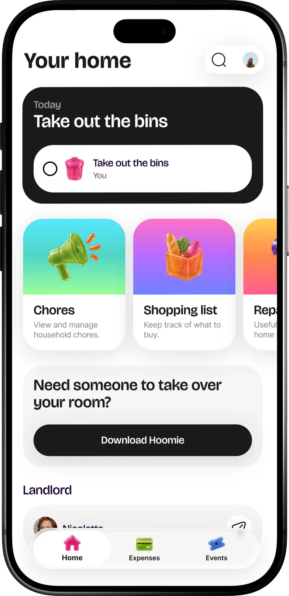
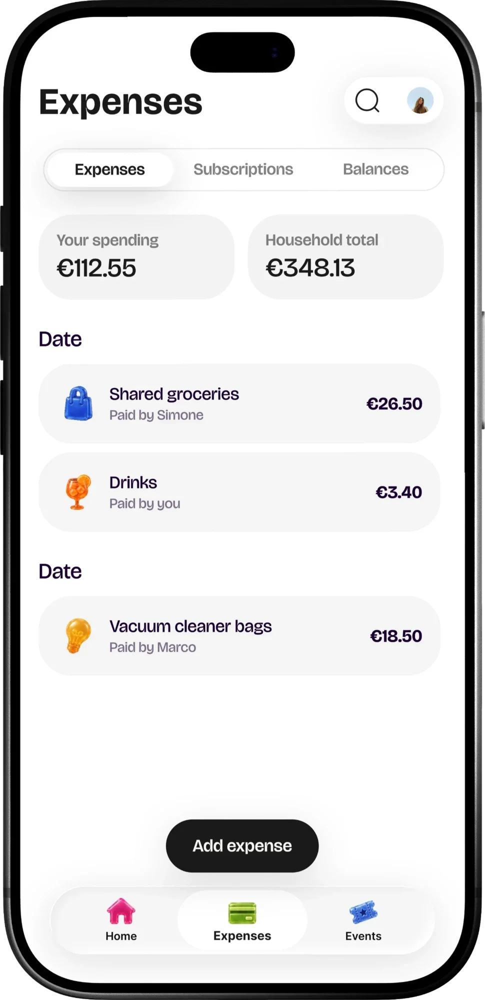
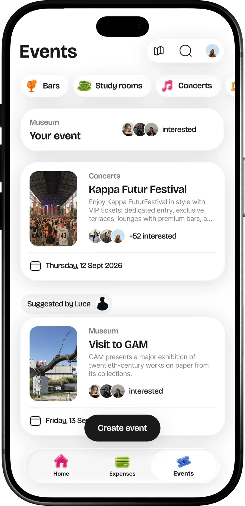

Work/UI/UXIn development
Hoomie Community
After finding a home, living in it. Hoomie's web app for household expenses, chores and city life.
The choice
You look for a home once every few years. You live in it every day.
We debated for a long time whether to put everything into a single app. In the end we kept it separate: searching for a home is used at a completely different frequency from everyday life at home and in the city.
This way the Community can also be used by people who already have a place and aren't looking for one.
From newcomer to local
Hooniversità
Choosing a university and understanding the ISEE (Italy's family income indicator)
On the websiteHoomie
Finding a home and the right people to live with
App · once every few yearsHoomie Community
Household expenses, chores and events in the city
Web app · every dayThis pageWhat it does
Today's task comes first. Below it: chores, the shopping list and contact with the landlord.

How much you've spent and the household total, with who paid for what. Subscriptions and balances are on the same screen.

Bars, study rooms and concerts in the city, with the people interested and events suggested by friends. Anyone can create one.

Between the two apps
The apps stay separate, but they talk to each other. When someone has to leave their room, the Community points to Hoomie to find who takes over.
The problem
What happens in a shared home after the contract is signed: what you observed, what flatmates told you.
From Hoomie to the Community
The other direction: what happens when a Crew finds a home, and how it reaches the Community.
Two or three flows
The main flows, shown with screens: for example adding an expense and organising chores.
Where it stands
Concept, prototype or live, and what you've learned so far.